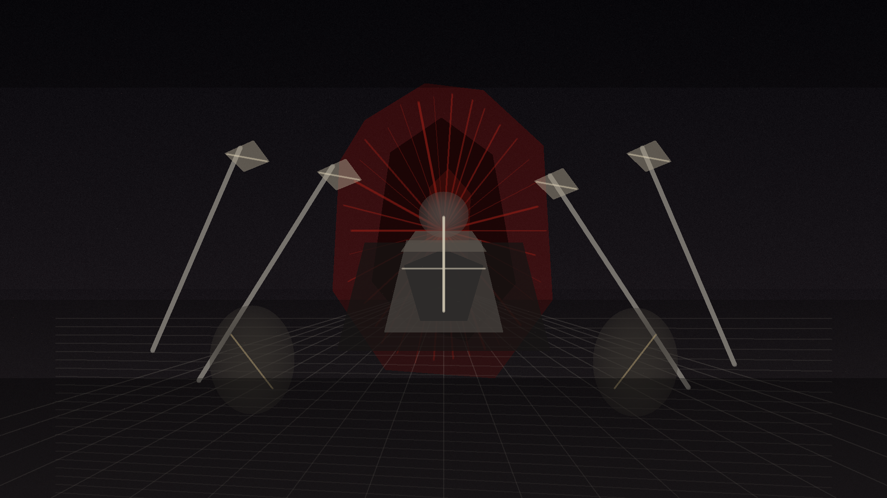

8
职业覆盖
278
官方唯一词缀
24
BD 档案
BD 大厅
按赛季、职业和用途查看构筑。
每套 BD 进入独立详情页，包含装备位置、核心暗金或威能、替换件、技能加点、巅峰点击顺序和打法。
BD 详情
装备资料库
列表负责检索，详情单独阅读。
当前收录官方 3.1.0 补丁页中的 278 条唯一装备固定词缀，并接入暗黑核暗金数据库补充暗金特效、掉落来源和验证部位；完整范围词缀仍按字段状态标注缺口。
威能索引
查核心威能在哪些 BD 和部位使用。
从结构化 BD 的装备槽位汇总威能名称、常见部位、核心度、替换状态和相关 BD；已可靠匹配的威能展示暗黑核数据库效果，未匹配项继续标注为 BD 派生。
赛季开荒路线
职业开荒、完整流派矩阵和掉落决策。
每个职业都有独立的开荒优先级、过渡路线、构筑轴、赛季 BD 矩阵和可用入口，补丁上线后可以快速调整权重。
资源
野蛮人
伤害实验室
把词缀收益拆开看。
输入武器伤害、技能系数、主属性和关键事件覆盖率，页面会输出期望每秒伤害与乘区拆分。
150 层参考
按职业查看 150 层速度参考。
S14 接入官方 3.1.0 固定词缀资料；后续赛季需要用真实冲层、速刷样本和热修补丁继续校准。
来源纪律
只把可追溯的内容放进资料库。
当前在线版本是 2026-06-10 的 3.0.4；3.1.0 在 2026-06-28 仍是未来补丁，所以页面明确分开当前版本与预览版本。